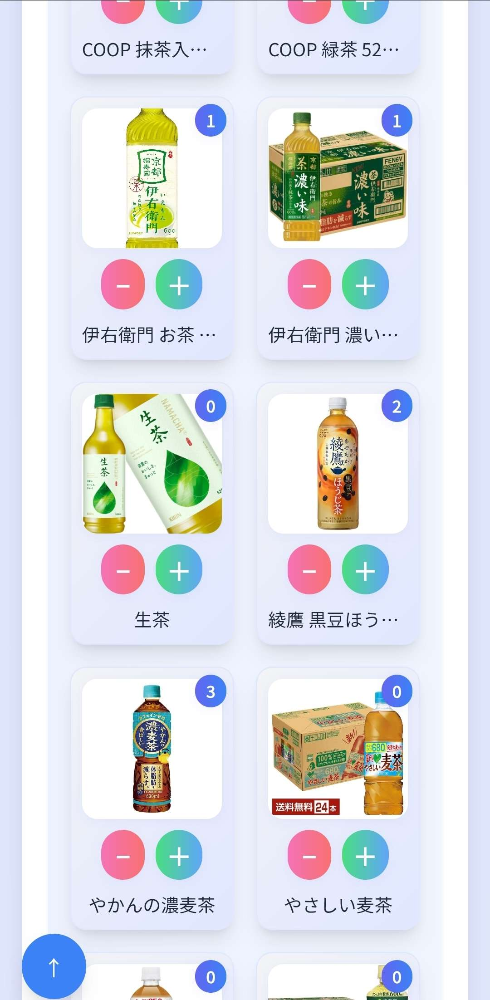

実績紹介
商品陳列アシスタント / Shinadashi Pro
概要
「あれ、どこだっけ？」「これ、何箱だっけ？」――。
そんなアルバイト先の「非効率」を根絶するために開発したのが、この『商品陳列アシスタント』です。
これまで個人の経験に頼りがちだった品出し業務を、誰もが迷わず、直感的に使えるWebアプリケーションへと昇華させました。新人でも即戦力として活躍できる環境を実現します。
課題・背景
アルバイト先の品出し業務では、商品の場所や補充数の確認に時間がかかる、手作業による単純なミスが多いといった課題が常態化していました。私自身も、本来であれば他のスタッフを手伝うべき時間をこの作業に費やさざるを得ず、店舗全体の非効率性を肌で感じていました。
この状況を解決するためツールを開発。導入後は、従来2時間以上かかっていた作業が1時間半に短縮・固定化され、業務量に左右されない安定したオペレーションを実現しました。
工夫した点・こだわった技術
- ユーザー中心の設計とフィードバックサイクル
開発の初期段階から、実際にツールを使用するアルバイト先の同僚など、複数人にプロトタイプを試してもらいました。頂いたフィードバックを元に、誰にとっても直感的で分かりやすいUI/UXとなるよう、ボタンの配置や機能の分類などを繰り返し改善しました。 - JavaScriptによるSPAライクな操作感
フレームワークに頼らず、素のJavaScript（Vanilla JS）のみで画面遷移を制御しました。これにより、Webページでありながら、まるでスマートフォンアプリのようにスムーズでストレスのない操作感を実現しています。 - 直感的なUIを実現するインタラクション
設定画面では`Sortable.js`を導入し、ドラッグ＆ドロップでカテゴリ等の順序を簡単に入れ替えられるようにしました。また、用途に応じて最適なUIを提供する「カウントモード」と「タスクモード」の切替機能を実装し、利用者の作業効率を最大化することを目指しました。 - AIを活用した高速開発とプロトタイピング
自身の強みである「効率化」を開発プロセス自体にも適用するため、AIコーディングツールを積極的に活用。これにより、アイデアの検証と実装のサイクルを高速化し、約12時間という短期間で高機能なプロトタイプの開発に成功しました。AIを生産性を最大化するための「パートナー」として活用するスキルを習得しました。
結果・学んだこと
この開発経験を通して最も大きな学びとなったのは、「最初に要件を明確に定義することが、開発の速度と質を大きく左右する」ということです。明確なゴールがあったからこそ、技術的な挑戦から、課題解決のための設計、ユーザーからのフィードバックを反映するプロセスまで、諦めずに最後までやり遂げることができました。この一つのプロジェクトを自分の力で形にできたことは、エンジニアを目指す上での大きな自信に繋がりました。
スキル
- HTML
- CSS
- JavaScript (ES6+)
- Tailwind CSS
- Sortable.js
- Git / GitHub